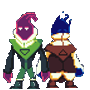

Yami: The Game
Yami is a pixel art 2D co-op metroidvania adventure game, which focuses on player discovery, through the usage of platforming and solving of puzzles, as well as uncovering lore of this world. Players will be able to control two brothers, Yuyo and Yuki. Both of whom possess the powers of Yami, but whereas the elder brother Yuki obtained a pure version, his younger brother Yuyo’s magic is corrupted.
In order to save Yuyo from the corrupted magic within, Yuki joins his brother in a quest beyond the safe borders of their city, seeking a desperate hope to find a cure somewhere within the Empire of old. Should they fail, Yuyo’s life will be overtaken and fade into the corrupted Yami. The world they traverse is teeming with dangerous creatures and traps alike, but through their bond as brothers they will explore the Empire, discovering clues and gathering precious information to find a path forward and a cure for Yuyo.
Yami: The World
The tale of Yami takes place within the world of Raum, and centers around the once mighty Yami Empire, whose namesake was the powerful magic they used to develop their expansive dominion. Through mastery and manipulation of the pure Yami magic, the Empire soon rose to control over all lands, with none standing in the way of their advanced technology and military might. However, those within the Empire unable to properly wield Yami attempted to take it for themselves, corrupting the pool of magic in the process. Now there are only memories and scattered fragments of what once was, the final keepers of pure Yami now a withered people.